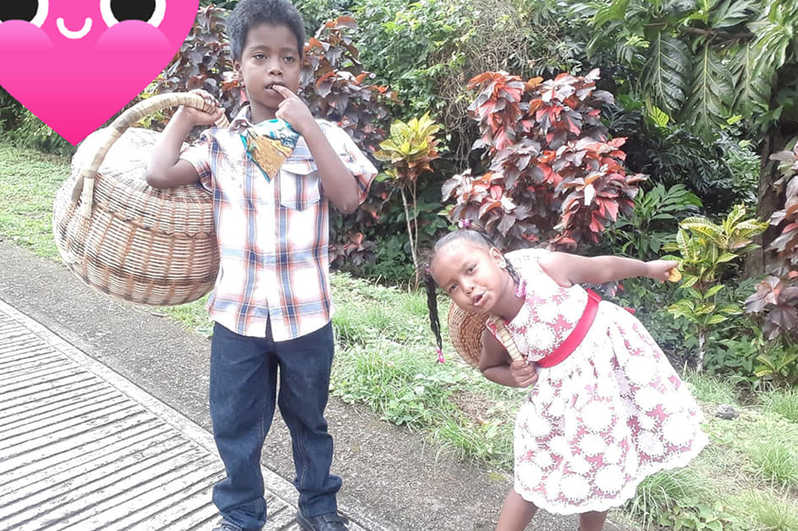
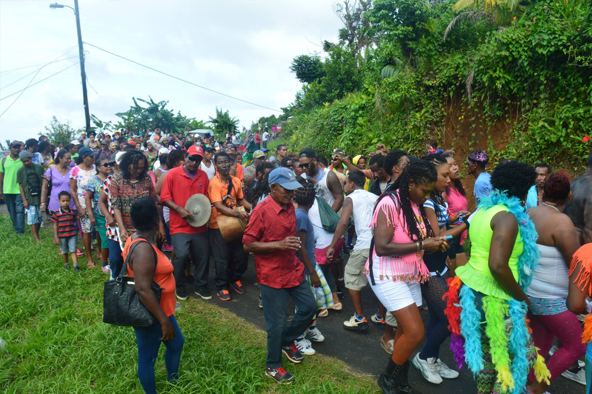
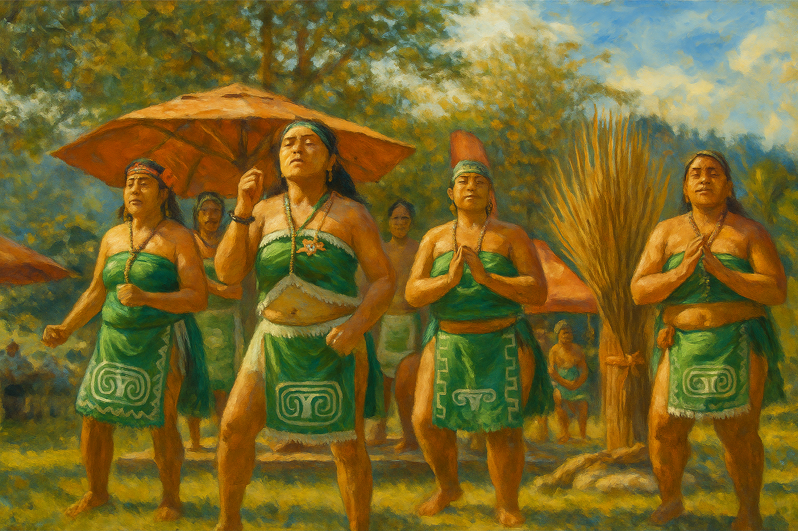
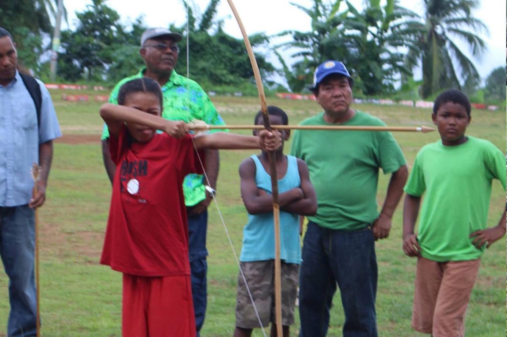
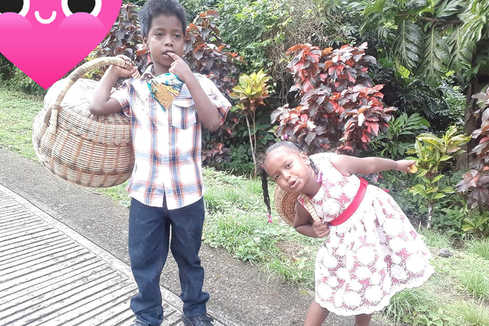
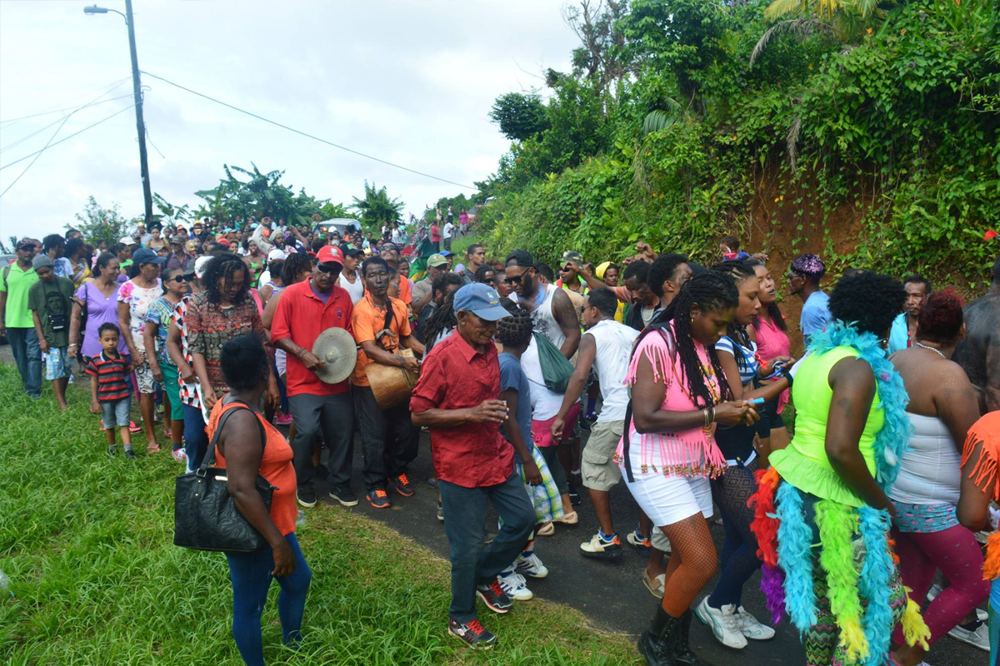
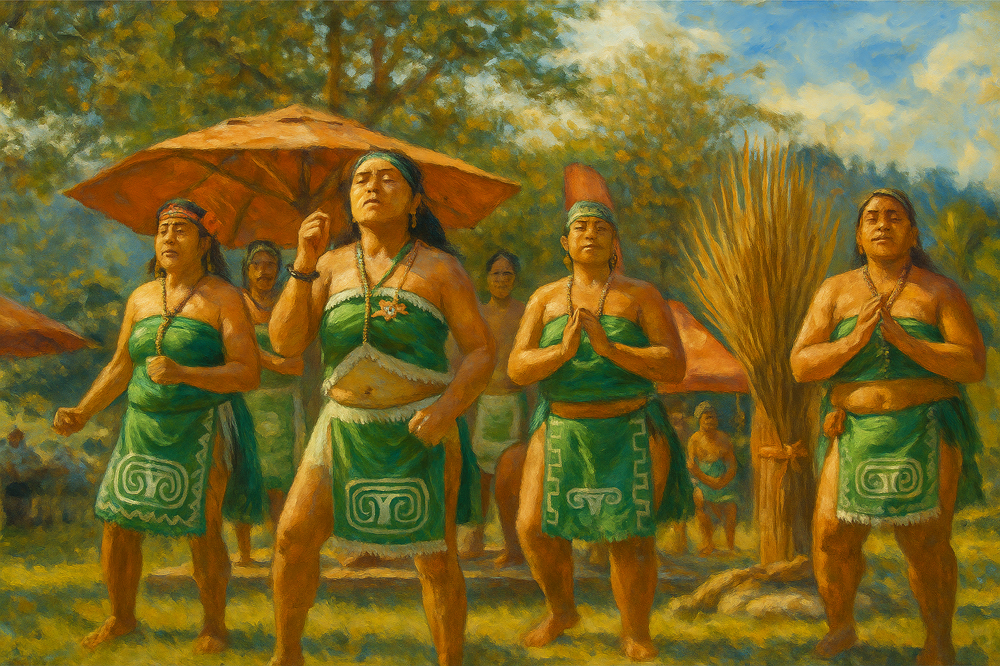
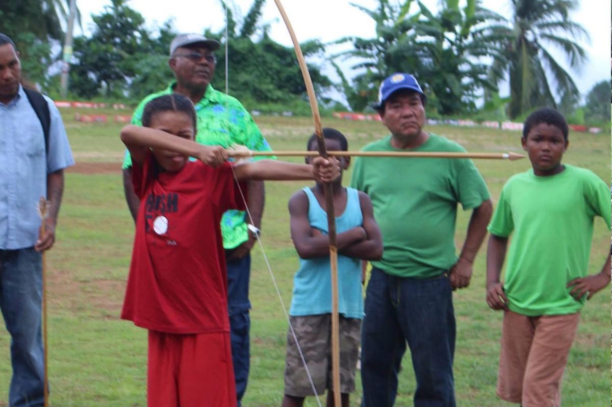

Interactive Kalinago Territory Map
Explore key cultural and natural landmarks within the Kalinago Territory.
Legend
 Cultural Site
Cultural Site- Viewpoint
- Food Spot
Kalinago Words You Should Know
| English | Kalinago (Karifuna) |
|---|---|
| Hello | Iréi |
| Thank you | Wálibá |
| Water | Túna |
| House | Karbey |
| Child | Kiyá |
| Land | Balú |
| Food | Káli |
| Friend | Kátu |
Community Gallery
Photos of crafts, nature, faces, and tradition from the Kalinago Territory.
 







Kalinago in Motion: Sports & Community
Sports unite our villages and generations. These videos capture the strength and spirit of our athletes in action.
Kalinago Video Highlights
Watch moments from our cultural and sporting events held in the Territory.
Places to Visit & Heritage Resources
Explore key sites, cultural hubs, and recommended readings about the Kalinago people.
Kalinago Historical Timeline
Arrival from South America
Ancestors of the Kalinago migrate from the Orinoco Basin into the Caribbean, settling Dominica and other islands.
Encounter with Columbus
Christopher Columbus sights Dominica; Kalinago resist European incursion fiercely across the region.
Warrior Resistance
The Kalinago maintain control of Dominica’s interior, defending their land against French and British colonists.
Carib Reserve Established
The British government formally recognizes the Kalinago presence by creating the Carib Reserve (now Kalinago Territory).
Centennial Celebrations
The Kalinago commemorate 100 years of formal recognition with cultural events and community renewal efforts.
Modern Identity and Revival
Focus on heritage preservation, language revival, and international visibility through culture, tourism, and digital presence.
If you'd like to support me as I build this initiative: